查看发行版 distro
回忆上次内容 😌
- 计算机本身的特性决定
- 计算机保存传递的是电子
- 而不是原子
- 这就使得存储和分发的成本几乎为零
- 在这样的物理基础上
- 出现了自由软件运动
- 从rms提出的free software 开始
- 到gnu研发的各种软件
- 自由软件运动之后出现了开源运动
- github可以在全世界范围内进行协作
- linux是5000个极客一起协作出来的内核
- 除了内核之外
- 程序要运行还需要一个壳子
- 具体是什么呢？🤔
查看发行版
- uname -a
- 可以得到全部信息
- 还知道有 ubuntu 这个发行版(distro)
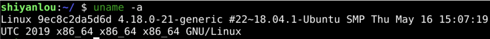
发行版
- 只靠 linux 内核
- 只有内核和各种应用程序在一起
- 发行版就是distro
- distro 的英文原文是 distribution
- 是内核和应用程序的集合
- 一个典型的 Linux 发行版包括
- Linux 内核
- 一些 GNU 程序库和工具
- 命令行 shell
- 也会包含图形界面。
都有哪些发行版呢？🤔
Distro hop
- 来做个 Distro hop
- Distro hop 是指折腾 Distro 来玩的人
排名
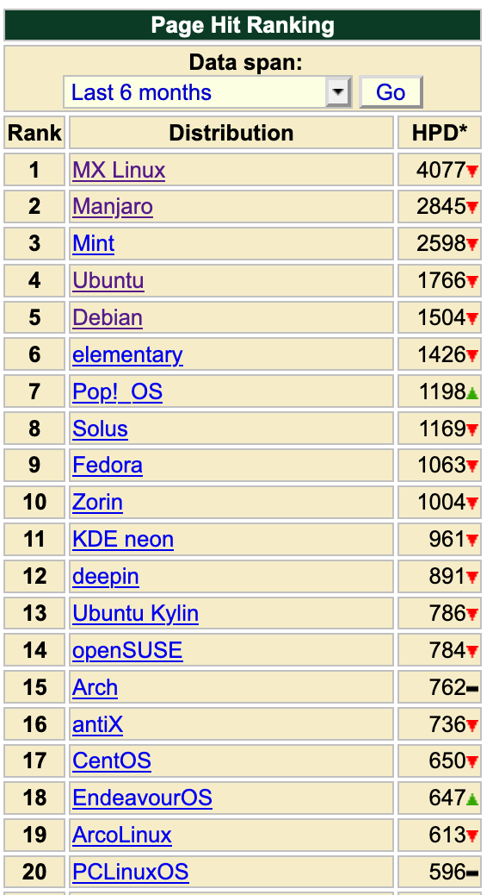
选择
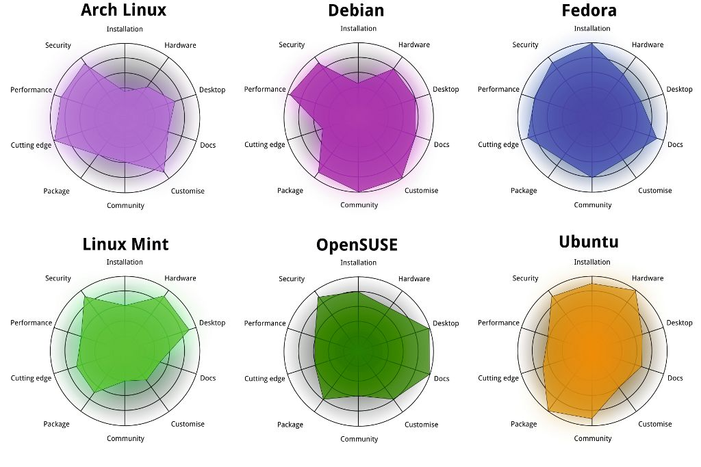
- 不同的发行版有不同的技能：
- debian, 适合系统管理和运维
- ubuntu 安装简单，界面友好，社区活跃。
- kali 就适合做网络安全方面的操作
- deepin 国产的深度发行版，界面做的非常好看
- centos 服务器
- gentoo 深入底层，透明
辅助
-
这里还有个网站能根据您回答问题的情况
-
发行版这么多
- 没关系
- 🧐
Linux 发行版三大家族
- Linux 发行版虽然很多，但是大体上是三大家族：
- Debian 家族
- Rhel 家族
- Suse 家族
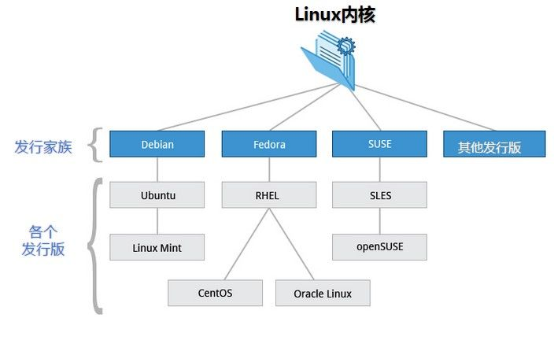
我们分别来说一下：
发行版家族关系大梳理 🧐
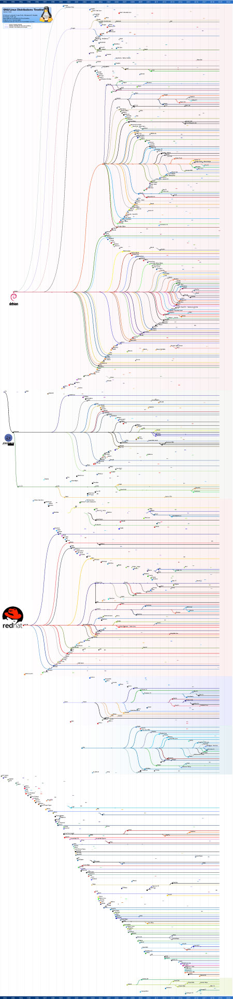
查看原图
详细发展过程
debian家族
- debian 家族 debian['dɛbɪən]
- Ian Murdock 依据
- 他女朋友的名字 Debra Lynn
- 他自己的名字 Ian Murdock
- 最终叫做“Debian”
- 各版本代号
-
Debian 是一个独立的组织
- 组织着 5 万个以上的软件包
- 320 百万行代码
- 各种项目的负责人是社区选出来的
-
支持的 cpu 指令集架构也多
- 比如中科院华为阿里押宝的 risc-v
- 比如龙芯兼容的 mips
-
下图是他下载 cd 的截图：
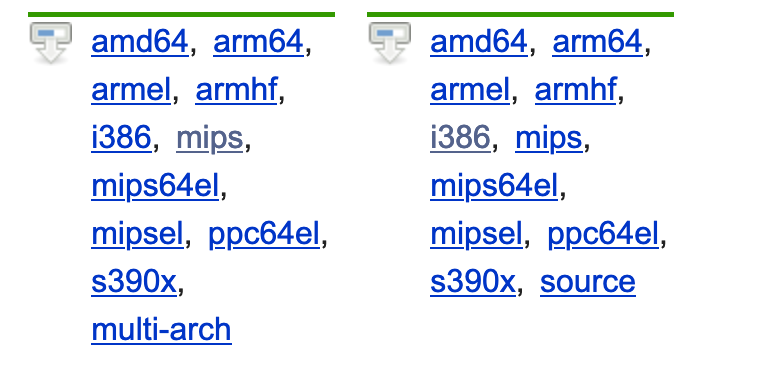
Ubuntu
- 其名称来自非洲 🌍 南部祖鲁语或豪萨语的“ubuntu"一词
- 意思是“人性”“我的存在是因为大家的存在"
- 是非洲传统的一种价值观。
- 发作“oo-boon-too”的音
- 如果你喜欢添加一些非洲撒哈拉的味道
- 你可以在第一个"u"後面带些嗡嗡声
- 自 2004 年创建 Ubuntu 以来
- Mark Shuttleworth 让开放自由的开源软件被大众熟知
- Canonical 公司运营这个ubuntu
- Canonical什么意思呢？
词源
- 源于希腊语“κανὼν”(kānōn)
- 意为“芦苇”、“杆”、“竿”
- 引申出“尺度”、“标准”、“规范”等含义
- 在古希腊时期
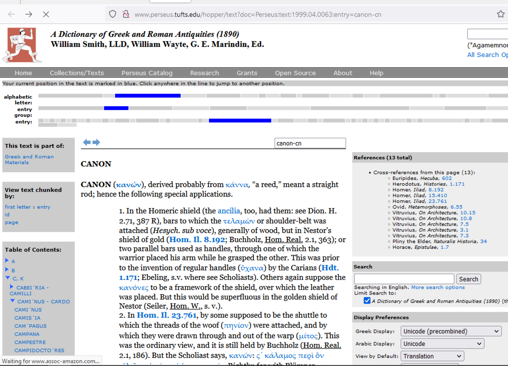
手杖
老丈人
演变
芦苇中间是空的
加农炮
控制器
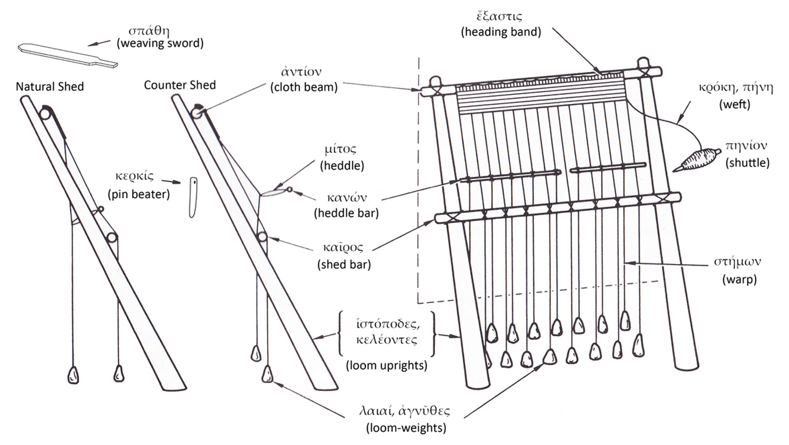
- κανὼν (kānōn)
- 切换奇偶经线上的芦苇(Reed)
- 通过这个控制经线
偶
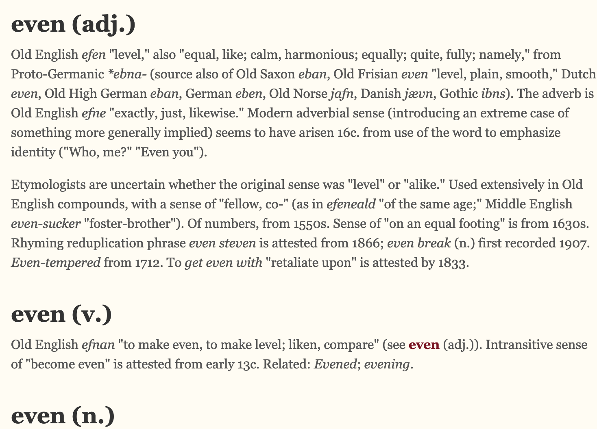
奇
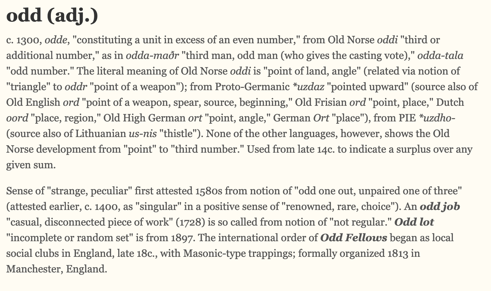
具体到织布机
经典canon
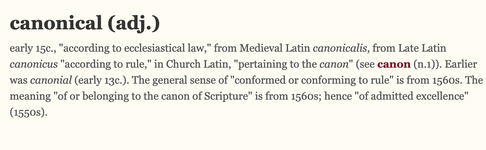
法律、规范、原则
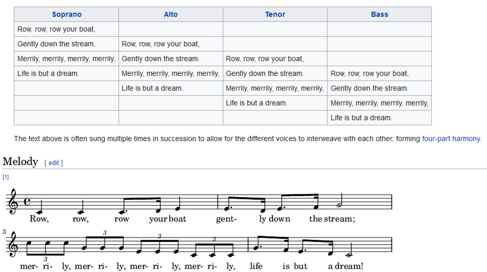
canonical
- canonical 来自于 canon
- 典型的;
- 被收入真经篇目的;
- 经典的;
- 按照基督教会教规的;
- (数学表达式)最简洁的;
- (布道时应穿的)法衣;
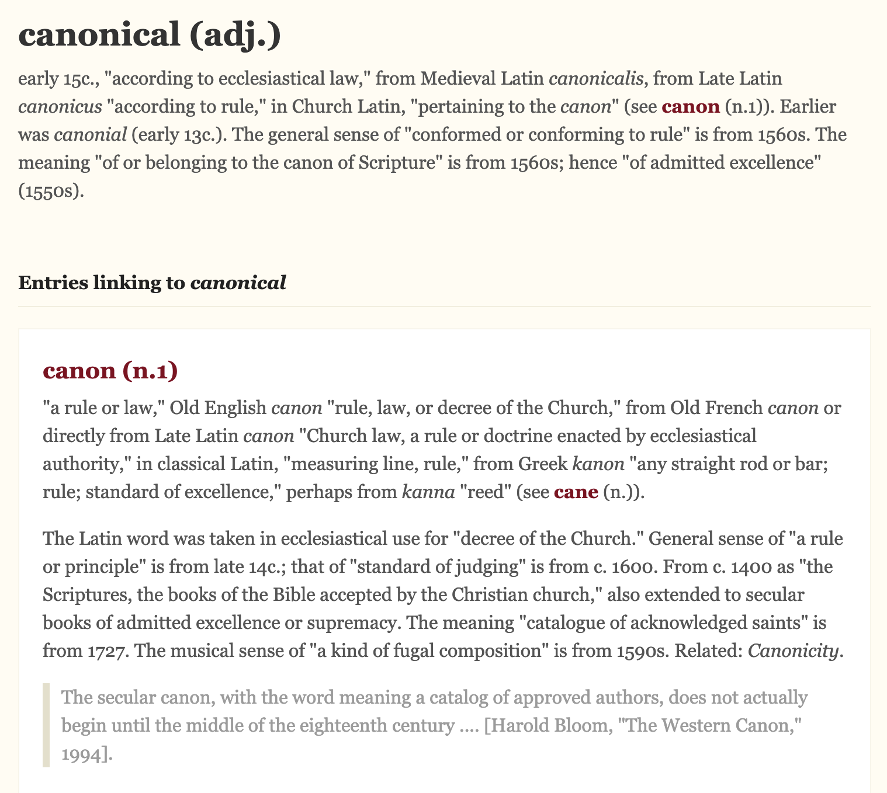
总结
- 我们使用
- uname -a
- 可以查看系统详细信息
- 除了内核之外
- 还有发行版
- 研究了linux发行版
- 研究了Debian家族
- ubuntu来自于canonical(经典)公司
- 下次再说👋🏻
{kind=link}